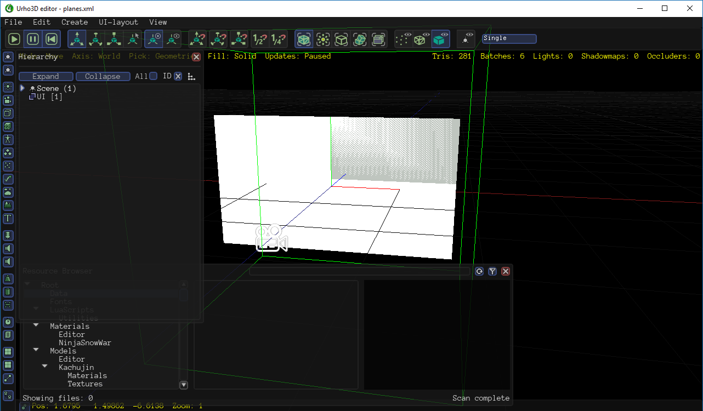

Pencheff
I have couple of billboard sets that lay on the same plane, say their nodes all have Z = 0 and are parallel.

I need the green plane on top right to be rendered over the white plane. One way is to change the green plane’s Z axis closer to the camera with very small value, but I don’t like the results (I really need them to be parallel). The other way I can think of is to use materials with different z-bias, I used that with Ogre3D, but the problem is I need to use different materials for every plane.
Any other ways I can do this ?